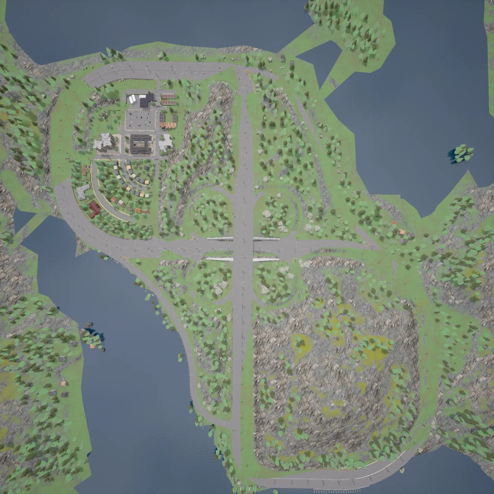
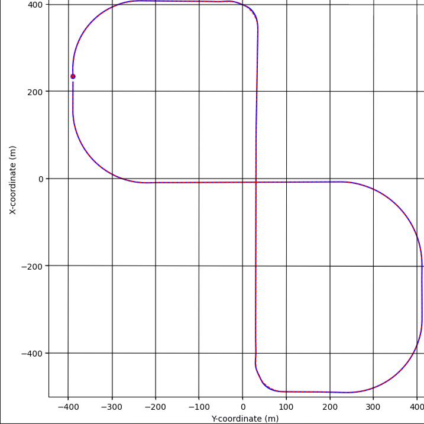

This project investigates the performance of Proportional-Integral-Derivative (PID) and Model Predictive Control (MPC) strategies in
high-speed autonomous vehicle cornering using the CARLA simulator. While PID is known for its simplicity and ease of tuning, it
lacks predictive capabilities, which may limit its performance during aggressive maneuvers. In contrast, MPC utilizes a dynamic model to
optimize control inputs over a prediction horizon, enabling it to handle constraints and anticipate future states.
The project focuses on benchmarking both control methods on a curved road at increasing speeds (115–160 km/h),
analyzing lane-keeping performance, stability, responsiveness, and control effort. Metrics such as lateral deviation, heading error, steering
smoothness, braking patterns, and average speed are used for comparison. This work offers insights into the trade-offs between classical and
model-based control strategies in the context of high-speed driving.
Motivation
The motivation for this project stems from an interest in how classical and modern control strategies perform in the context of future autonomous driving.
While self-driving cars are becoming increasingly prevalent, they are typically seen operating at relatively modest speeds, especially in urban environments.
However, as autonomous technology evolves, it is expected that self-driving vehicles will be required to perform safely and reliably at highway or
expressway speeds — a scenario that demands higher responsiveness and stability from their control systems.
Among the most widely adopted control approaches in autonomous vehicles are PID (Proportional-Integral-Derivative) and MPC (Model Predictive Control).
This project aims to explore which of these strategies may offer better performance under high-speed, curved road conditions.
The findings could be relevant not only for future self-driving vehicles operating at faster speeds but also for domains such as autonomous racing,
including F1.
Beyond practical applications, this project also serves a personal purpose: having already worked with PID controllers and learning MPC in the current
academic quarter, I was curious to compare their real-world behavior and limitations in a rigorous testing environment.
Combining this curiosity with a long-standing passion for cars made it natural to explore this comparison in the context of vehicle dynamics.
Objectives
To evaluate and compare the performance of PID and MPC controllers in high-speed cornering scenarios.
To measure controller effectiveness using cross-track error, heading deviation, and lane stability.
To assess responsiveness and control smoothness using steering, throttle, and brake effort.
To determine which controller maintains higher stability and performance across increasing speeds.
To provide visual and statistical evidence for controller behavior and effectiveness using simulation data.
Simulation Environment
All experiments were conducted using CARLA 0.9.14,
an open-source simulator for autonomous driving research. Python 3.10 was used to interface with CARLA’s API.
The vehicle used was the Mercedes Coupe 2020 from the CARLA vehicle blueprint library. The simulation took place in
Town04,
which includes two distinct types of curved segments:
2 turns with approximately 60-meter radius (no banking)
4 turns with approximately 165-meter radius (no banking)
These road geometries were selected to test the controllers' ability to maintain lane position and stability under different levels of curvature at high speeds (115–160 km/h).

Figure: CARLA Town 4 Track Aerial View

Figure: Town 4 track
Both the PID and MPC models were tuned specifically for maximum speed operation while maintaining moderate stability to evaluate performance under aggressive cornering scenarios. This tuning approach reflects real-world constraints in high-speed autonomous driving where responsiveness is critical, but excessive conservatism may limit top performance.
Assumptions: The simulation environment assumes ideal operating conditions without perception or estimation uncertainty. Key assumptions include:
Full-State Availability: All vehicle states (position, velocity, heading, etc.) are directly accessible without the need for estimation or sensor fusion.
No Perception Stack: The simulation excludes object detection, classification, or semantic understanding. No obstacle avoidance logic is implemented.
Single-Agent Control: The vehicle operates in a static, obstacle-free environment with no interaction with other agents or traffic.
Vehicle Dynamics Model: Control logic is based on an ideal kinematic bicycle model. Effects such as tire slip, actuator delay, or dynamic load transfer are not considered.
Failure Criteria and Speed Limit: Drifts of up to 90° from the lane heading are considered valid. Any yaw deviation beyond 90° by both the vehicles, or collisions with stationary objects, are treated as failure conditions. Based on empirical testing on the Town04 track, the maximum reliably achievable speed was found to be 160 km/h for atleast one of the cars.
Vehicle Dynamics Model: Control logic is based on an ideal kinematic bicycle model. Effects such as tire slip, actuator delay, or dynamic load transfer are not considered.
Specifically, vehicle drift dynamics were not incorporated into the MPC model due to the highly non-linear nature of drift, which would significantly overcomplicate the control problem and was considered beyond the scope of this project. While the simulated vehicle may exhibit drift at high speeds, the controller does not explicitly model or compensate for it. This could be an area for future enhancement.
Libraries Used
import carla
import numpy as np
import time
import math
import random
import traceback
import matplotlib.pyplot as plt
from scipy.optimize import minimize
import pandas as pd
import os
Control Strategy
This project implements and compares two distinct control strategies for high-speed vehicle navigation in CARLA:
Model Predictive Control (MPC) and Proportional-Integral-Derivative (PID) control. Both controllers aim to achieve a
target speed of 140.0 km/h while accurately tracking a predefined path. The simulation operates
with a fixed time step (SIMULATION_STEP) of 0.05 seconds. The vehicle model used has a
wheelbase (VEHICLE_L) of 2.8 meters.
Model Predictive Control (MPC)
MPC is an advanced control strategy that uses an explicit model of the vehicle to predict its future states
over a finite time horizon. It then optimizes a sequence of control inputs (steering and acceleration)
by minimizing a predefined cost function. This process is repeated at each time step, providing a proactive
and optimal control action.
MPC Parameters:
Prediction Horizon (MPC_HORIZON): 7 steps
Discretization Time Step (MPC_DT): 0.05 seconds (same as SIMULATION_STEP)
Maximum Steering Angle (MAX_STEER_RAD): ±45 degrees
The MPC utilizes a kinematic bicycle model to predict the vehicle's state. The state is defined as
[x, y, ψ, v], representing the vehicle's X-coordinate, Y-coordinate, yaw angle, and speed, respectively.
The control inputs are acceleration (a) and steering angle (δ).
The optimizer seeks to minimize a cost function J over the prediction horizon N.
The cost function penalizes deviations from the reference trajectory, excessive control effort, and rapid changes in control inputs.
The optimal control sequence [a0, δ0, ..., aN-1, δN-1]
is found using the Sequential Least Squares Programming (SLSQP) algorithm provided by scipy.optimize.minimize.
The optimization is subject to the defined bounds on acceleration and steering angle.
Only the first control action (a0, δ0) from the optimized sequence is applied to the vehicle,
and the process is repeated at the next time step (receding horizon control).
Reference Trajectory Generation:
At each step, a reference trajectory consisting of N waypoints (state [x, y, ψ, v] for each step in the horizon)
is generated. This is done by querying the CARLA map (carla_map_obj) for waypoints along the current lane.
Waypoints are projected forward based on the target speed and the MPC discretization time step (MPC_DT).
Logic is included to select the appropriate lane (e.g., second lane from the left on Town04) and handle scenarios
where the end of a road segment is reached within the horizon.
Proportional-Integral-Derivative (PID) Control
The PID control strategy is a reactive approach that continuously calculates an error value as the difference
between a desired setpoint and a measured process variable. It then applies a correction based on proportional,
integral, and derivative terms of this error.
Two independent PID controllers are used:
Lateral Control (Steering): A PID controller to minimize a combined error based on heading error and cross-track error (CTE).
Longitudinal Control (Throttle/Brake): A PID controller to regulate the vehicle's speed towards the target speed.
PID Controller Parameters & Gains:
Steering PID:
STEER_KP: 0.6
STEER_KI: 0.005
STEER_KD: 0.20
Throttle PID:
THROTTLE_KP: 0.5
THROTTLE_KI: 0.02
THROTTLE_KD: 0.01
Integral Term Limit: ±2.0 (for anti-windup)
Simulation Time Step (dt for PID): 0.05 seconds
Error Calculation:
Speed Error:Target Speed - Current Speed.
Heading Error (Yaw Error): The angle between the vehicle's current heading and the direction
to a lookahead waypoint on the path. The lookahead distance (WAYPOINT_LOOKAHEAD) is 12.0 meters.
Calculated as atan2(sin(ψtarget - ψcurrent), cos(ψtarget - ψcurrent)).
Cross-Track Error (CTE): The perpendicular distance from the vehicle to the center line of the target lane.
It's calculated by taking the dot product of the vector from the nearest waypoint on the path to the vehicle,
with the right-vector of that waypoint.
CTE Correction Angle: An additional steering correction term derived from the CTE, calculated as
atan2(-CTE, CTE_CORRECTION_LOOKAHEAD), where CTE_CORRECTION_LOOKAHEAD is 8.0 meters.
This aims to steer the vehicle back towards the centerline.
Combined Steering Error: The input to the steering PID controller is
Heading Error + (CTE_CORRECTION_WEIGHT · CTE Correction Angle),
where CTE_CORRECTION_WEIGHT is 0.7.
PID Control Law:
The standard discrete PID control law is implemented as:
The integral term is clamped to prevent integral windup.
Control Output and Logic:
Steering command (steer_cmd) is clamped between -1.0 and 1.0.
Throttle command (throttle_cmd) is clamped between 0.0 and 1.0.
Braking Logic:
If speed_error < -10 km/h (overspeeding), brake is applied proportionally to the error, and throttle is set to 0.
If abs(steer_cmd) > 0.5 and speed is above a threshold (40% of target speed), gentle braking is applied, and throttle is reduced.
A safety brake (0.5 brake, 0.0 throttle) is engaged if abs(CTE) > 2.0 meters or abs(Heading Error) > 30 degrees while speed is above 70 km/h.
Path Following:
The PID controller relies on identifying the correct lane (initially the second lane from the left on Town04, with target_lane_id)
and then finding the nearest waypoint on that lane. Waypoints are projected ahead to calculate errors. Logic is included to
attempt to "hop" to the target lane if the vehicle strays.
Methodology & Data Analysis
The comparative analysis of the PID and MPC controllers was conducted through a systematic series of simulations and subsequent data processing.
The core methodology involved:
Controller Implementation:
Python scripts were developed to implement both the PID and MPC control logics. These scripts interfaced with the CARLA simulator API to:
Spawn and control the 'vehicle.mercedes.coupe_2020'.
Set the CARLA world to synchronous mode with a fixed delta time of 0.05 seconds for deterministic simulations.
Generate reference waypoints for path following.
Apply calculated control commands (throttle, brake, steer) to the vehicle.
Log relevant simulation data at each time step.
Both controllers were tuned for high-speed operation with a focus on achieving maximum possible speed while maintaining moderate stability on the curved sections of Town04.
Simulation Runs:
For each controller (PID and MPC), a series of 10 distinct simulation runs were executed. Each run targeted a specific constant speed, incrementing from 115 km/h to 160 km/h in 5 km/h steps.
During each run, the vehicle attempted to complete one full lap of the predefined circuit in Town04.
Key data points logged during each simulation included:
Time (sim_time_plot)
Actual vehicle speed (current_speed_kmh_val)
Steering command (steer_cmd)
Throttle command (throttle_cmd)
Brake command (brake_cmd)
Cross-Track Error (CTE) (cte_val_plot or cte)
Heading Error (heading_error_val_plot or yaw_error_rad)
Actual vehicle X and Y coordinates (current_carla_location.x, .y)
Ideal (reference) X and Y coordinates (ref_traj_np[0,0], ref_traj_np[0,1] or ideal_location_for_plot_carla.x, .y)
This data was saved to CSV files, named systematically (e.g., pid_data_140.csv, mpc_data_140.csv) for each controller and target speed.
Data Post-Processing and Analysis:
A separate Python script utilizing pandas for data manipulation and matplotlib for plotting was developed to analyze the collected CSV data. The analysis script performed the following key operations:
Data Aggregation: Loaded data from all simulation runs for both PID and MPC.
Time Synchronization & Interpolation:
To compare runs of varying durations and ensure consistent data points for averaging, a common time grid was established based on the shortest simulation run. Data for longer runs (CTE, Heading Error, Steering, Throttle, Brake) was interpolated onto this common time grid using linear interpolation (scipy.interpolate.interp1d). This step was crucial for generating meaningful average performance plots over time.
Calculation of Performance Metrics & Plot Generation:
Total Simulation Time vs. Target Speed: Plotted to show how long each controller took to complete the lap at different target speeds.
Average CTE vs. Time: Averaged interpolated CTE values across all runs for each controller, plotted against the common time grid.
Average Heading Error vs. Time: Similar to CTE, averaged interpolated heading errors were plotted.
Average Steering Command vs. Time: Visualized the mean steering effort over time.
Average Throttle and Brake vs. Time: Showed mean longitudinal control effort.
Overall Average Speed: Calculated the mean speed achieved by each controller across all its runs and time points on the common grid.
Average Lane Exits per Run: Counted instances where the absolute CTE exceeded a threshold (1.5 meters) for each run, then averaged these counts per controller.
Ideal Path Visualization: Plotted the x_ideal and y_ideal coordinates from a sample run to visually inspect the track's curvature.
The live plotting capabilities within the CARLA simulation scripts (setup_plots, update_trajectory_plot, update_live_data_plots) also provided real-time feedback during individual runs, aiding in tuning and initial assessment. Post-simulation plots (generate_post_simulation_plots) offered immediate insights into CTE and heading error for each specific run.
This comprehensive methodology allowed for a robust quantitative and qualitative comparison of the PID and MPC controllers across a range of challenging high-speed scenarios.
Video Demonstrations
The following videos demonstrate the comparative performance of the PID and MPC controllers in action within the CARLA simulator
at different target speeds. Each set of videos below presents the vehicle's behavior under PID control and MPC control
side-by-side for a given target speed on the Town04 circuit.
PID vs. MPC at 115 km/h
This demonstration shows the controllers operating at a target speed of 115 km/h.
The left video shows the PID controller, and the right video shows the MPC controller.
Observe the differences in path tracking, stability, and control smoothness, particularly around the curved sections.
PID Controller at 115 km/h
MPC Controller at 115 km/h
Figure: Comparison of PID (left) and MPC (right) controllers at 115 km/h.
PID vs. MPC at 160 km/h
This demonstration showcases the controllers at a significantly higher target speed of 160 km/h.
The left video shows the PID controller, and the right video shows the MPC controller.
This more challenging scenario highlights the limits of each controller in terms of stability and
path adherence under aggressive cornering conditions.
PID Controller at 160 km/h
MPC Controller at 160 km/h
Figure: Comparison of PID (left) and MPC (right) controllers at 160 km/h.
Results and Analysis
The performance characteristics of the Proportional-Integral-Derivative (PID) and Model Predictive Control (MPC) strategies were systematically evaluated. Data was acquired from simulations conducted at target velocities ranging from 115 km/h to 160 km/h on the Town04 circuit within the CARLA environment. The subsequent analysis delves into simulation efficiency, trajectory stability (quantified by cross-track and heading errors), control effort expenditure (steering, throttle, and brake commands), and overall lane-keeping proficiency.
1. Simulation Efficiency: Lap Completion Time as a Function of Target Speed
Overall performance efficiency was assessed by quantifying the total simulation time each controller required to complete a full lap of the designated circuit at a spectrum of target speeds. A reduced lap time is indicative of superior path following, characterized by fewer and less significant corrective maneuvers, thereby reflecting higher overall trajectory efficiency.
Figure: Lap completion times for PID and MPC controllers across target speeds (115 km/h to 160 km/h).
Observations:
At lower to moderate velocities (115–140 km/h), the PID controller exhibited greater agility, completing the driving task with shorter lap times compared to the MPC.
A distinct performance inflection point was observed at approximately 145 km/h, beyond which the MPC strategy consistently yielded lower lap times.
The PID controller's performance profile demonstrated a U-shaped characteristic, with lap times reaching a minimum near 140 km/h before subsequently increasing. This pattern suggests a potential degradation in stability or an escalation in lateral corrective effort at elevated speeds.
Conversely, MPC displayed a more monotonic improvement in lap times up to 150 km/h, followed by a subtle plateau, implying sustained control efficiency even as vehicle speed increased.
At the upper limit of the tested speed range (160 km/h), MPC completed the lap approximately 3.5 seconds faster than PID, highlighting its enhanced stability and efficiency under high-speed conditions.
Speed Range
Controller with Lower Lap Time
Attributed Factors
115 – 140 km/h
PID
Rapid response characteristics, minimal computational overhead for planning
145 – 160 km/h
MPC
Superior high-speed stability, smoother corrective actions due to predictive capability
Conclusion on Simulation Efficiency:
The lap time analysis reveals a significant performance crossover phenomenon. While PID's inherent responsiveness offers an efficiency advantage at moderate speeds, MPC's predictive control paradigm becomes increasingly beneficial as speeds exceed 140 km/h. At higher velocities, the ability to anticipate upcoming path curvatures and required state adjustments allows MPC to generate more optimized and cleaner trajectories, thereby minimizing overcorrections and enhancing overall efficiency.
These findings suggest distinct operational regimes:
PID's lightweight architecture and immediate responsiveness render it suitable for low to medium-speed applications where computational simplicity is valued.
MPC demonstrates superior efficacy in high-speed, dynamically demanding scenarios, particularly those involving significant road curvature, where predictive foresight and robust stability are paramount for optimal performance.
2. Trajectory Stability Analysis: Cross-Track and Heading Error Dynamics
The stability of the trajectories generated by each controller was assessed by analyzing two principal metrics, averaged across all simulation runs: Cross-Track Error (CTE), defined as the lateral deviation from the ideal path centerline, and Heading Error, representing the angular deviation from the desired vehicle orientation. For equitable comparison, data were interpolated onto a common time grid, constrained by the duration of the shortest experimental run.
Cross-Track Error (CTE) Analysis:
Figure: Average Cross-Track Error (CTE) vs. Time, normalized across runs.
The temporal profiles of average CTE revealed distinct control characteristics:
MPC generally maintained closer proximity to the lane centerline, exhibiting a consistently lower average CTE throughout the simulations.
PID, while demonstrating effective tracking, was characterized by fewer oscillatory deviations, but these tended to be of greater magnitude when they occurred, suggesting a more forceful reactive correction.
In contrast, MPC enacted smaller, more frequent lateral adjustments, indicative of its continuous optimization process and predictive error compensation.
Both controllers proved competent in path tracking; however, MPC achieved notably smoother lane adherence, a benefit particularly evident during navigation through curved road segments.
Heading Error Analysis:
Figure: Average Heading Error vs. Time, normalized across runs.
Analysis of heading error dynamics showed subtle yet consistent differences in orientation control:
PID exhibited slightly larger peak heading errors, a tendency more pronounced during sharp turns or aggressive high-speed transitions.
MPC, conversely, demonstrated more consistent heading alignment, characterized by smaller-amplitude, smoother oscillations over the course of the run.
Significantly, neither controller displayed indications of extreme instability; both effectively guided the vehicle towards zero error recuperation following disturbances.
While discernible differences in heading performance were present, particularly in challenging track segments, the overall disparity was not substantial.
Metric
PID Controller Characteristics
MPC Controller Characteristics
Comparative Summary
CTE Magnitude & Frequency
Larger, less frequent deviations
Smaller, more frequent corrections
MPC achieved slightly better centering; PID's errors were less frequent but larger.
Heading Error Profile
Slightly larger peaks, especially during sharp turns
More consistent alignment, lower-magnitude drift
MPC demonstrated a smoother overall heading error profile.
Generally stable, but more susceptible to error spikes
Higher consistency, reduced error variance
MPC demonstrated marginally superior overall stability and smoothness.
Conclusion on Stability:
Both PID and MPC controllers successfully maintained vehicle stability across the tested operational envelope. However, MPC exhibited a discernible advantage in terms of consistency and smoothness of the trajectory. While the absolute difference in peak error magnitudes was not extensive, MPC's predictive methodology facilitated a more refined control output, proving particularly beneficial in high-velocity maneuvers and through complex road geometries. PID's inherent responsiveness offers utility in rapid error nullification, yet MPC's proactive adjustments generally contribute to a more composed and predictable vehicle behavior over extended operational periods.
3. Control Effort Profile: Steering Command Dynamics
The average steering command signal, analyzed over time and across all tested speeds, provides critical insights into the control behavior and responsiveness of each strategy. This metric particularly illuminates the frequency and intensity of corrective steering actions, especially during cornering or deviation recovery.
Figure: Average Steering Command vs. Time.
Key Observations:
PID's steering command profile was characterized by sharper, more pronounced changes, with distinct spikes (e.g., around the 70-second mark). This pattern is indicative of more aggressive, reactive corrections, likely initiated in response to larger accumulated trajectory deviations.
MPC, in contrast, demonstrated more frequent but smaller-amplitude steering adjustments. This reflects a more tightly regulated control loop, emphasizing continuous, predictive micro-corrections to maintain the desired path.
The increased density of MPC's steering activity, particularly evident in the 35–55 second interval, highlights its fine-grained approach to path correction during dynamically complex segments of the track.
While PID's steering inputs involved fewer substantial adjustments, these larger peaks often corresponded to reactive recovery maneuvers from preceding overshoots or deviations.
Despite these contrasting stylistic approaches to steering control, it is noteworthy that both controllers maintained overall trajectory smoothness, with no evidence of erratic or unstable steering oscillations that would compromise vehicle stability or passenger comfort.
Aspect
PID Controller Steering Profile
MPC Controller Steering Profile
Comparative Steering Behavior
Peak Steering Magnitude
Larger spikes, occurring less frequently
Smaller, more frequent fluctuations
MPC exhibited smoother steering inputs with lower peak magnitudes.
Correction Frequency & Intensity
Less frequent, higher magnitude corrections
More frequent, lower magnitude corrections
Strategies differed: PID was reactive and forceful; MPC was proactive and incremental.
Steering Stability & Smoothness
Reactive, aggressive when necessary
Predictive, yielding smoother adjustments
Both demonstrated relatively stable and smooth steering control.
Response to Curves
Strong, impulsive steering initiation
Gradual, sustained steering application
Both effective; PID offered sharper turn-in, MPC smoother negotiation.
Conclusion on Steering Effort:
The steering command analysis elucidates the fundamental differences in control philosophy. PID's tendency towards sharper, less frequent corrections can facilitate rapid trajectory recovery but may also introduce a degree of abruptness or risk overshooting the target path. Conversely, MPC's strategy of distributing control effort through smaller, more frequent adjustments typically results in a more stable and smoother driving profile. This reinforces the observation that MPC prioritizes consistent stability and smoothness, particularly advantageous in high-speed or curve-intensive driving, whereas PID's strength lies in its immediate responsiveness and error correction capabilities.
4. Longitudinal Control Dynamics: Throttle and Brake Command Analysis
An analysis of the average throttle and brake commands was performed to evaluate how each controller managed speed regulation and deceleration. These signals offer insights into the smoothness of power modulation and the extent to which each strategy relies on aggressive braking versus nuanced throttle corrections during curves and transitional maneuvers.
Figure: Average Throttle and Brake Commands vs. Time.
Key Observations:
The overall throttle application strategy was largely consistent between the two controllers, with both exhibiting predictable reductions in throttle during cornering and increases during straight-line acceleration phases.
PID's throttle output displayed slightly more pronounced and frequent oscillations, particularly during mid-run transitions and in the vicinity of the 70-second mark, suggesting a more reactive style of throttle adjustment.
MPC's throttle command profiles were demonstrably smoother, characterized by fewer abrupt changes, a behavior consistent with its predictive control methodology.
Brake application was minimal for both controllers, manifesting as brief, low-magnitude spikes at only a few junctures during the lap, indicative of generally efficient speed management.
In a specific instance around the 75-second mark, PID engaged marginally stronger braking; however, apart from this, braking patterns were nearly identical and infrequently utilized by both systems.
Aspect
PID Controller Power Profile
MPC Controller Power Profile
Comparative Power Management
Throttle Smoothness
Minor oscillations observed in several segments
Smoother ramp-ups and declines in throttle application
MPC provided smoother throttle modulation.
Brake Usage
Few, sharper brake spikes
Slightly softer, infrequent brake responses
Both used brakes sparingly; differences were minimal.
Overall Power Stability
More reactive throttle adjustments
More predictive and even-handed power delivery
MPC demonstrated more stable and predictive power control.
Conclusion on Power Command:
Both controllers demonstrated effective throttle and brake management, characterized by minimal reliance on braking and appropriate throttle modulation throughout the simulated driving task. While the PID controller occasionally exhibited greater variability in throttle application, MPC consistently maintained smoother and more stable acceleration control. These patterns are congruent with previous observations regarding trajectory tracking and steering behavior, reaffirming MPC's emphasis on predictive, smooth control, while PID remains effective through its slightly more reactive, yet capable, approach.
5. Aggregate Performance: Average Speed and Lane Keeping Integrity
In addition to detailed analysis of trajectory tracking and control effort, two key aggregate performance metrics were evaluated across all runs: the average speed maintained over the lap, and the frequency of lane departures.
Average Speed Maintained:
Controller
Average Speed
PID
120.45 km/h
MPC
120.50 km/h
Conclusion on Average Speed: Despite discernible differences in control behavior and trajectory smoothness, both controllers achieved remarkably similar average speeds across the entirety of the test runs. This suggests that neither strategy significantly compromised longitudinal performance in pursuit of stability or corrective precision, and both effectively managed throttle and brake inputs to sustain comparable cruising velocities.
Lane Keeping Performance (Lane Exits):
To quantify path adherence and safety, the number of instances where each controller allowed the vehicle's cross-track error (CTE) to exceed a threshold of ±1.5 meters was recorded. Such an event was defined as the vehicle effectively departing its designated lane.
Controller
Average Lane Exits per Run
PID
49.10
MPC
14.50
The disparity in lane exit frequency is substantial: PID resulted in over three times more lane departures on average when compared to MPC. This observation aligns coherently with earlier findings indicating that:
PID's tendency towards aggressive corrective actions can occasionally lead to overshoots and subsequent oscillatory drifting beyond lane boundaries.
MPC consistently maintains smoother trajectory control, benefiting from predictive planning, which allows it to adhere to lane boundaries with significantly greater reliability.
Conclusion on Lane Exits: While both controllers achieved comparable average speeds, MPC demonstrated markedly superior performance in lane keeping stability, evidenced by a substantially lower frequency of lane exits per run. This positions MPC as a more robust candidate for applications where safety and consistent, precise lane tracking are critical operational requirements, particularly in challenging curved geometries or high-speed driving environments.
Overall Conclusion
This comparative study of PID and Model Predictive Control (MPC) for high-speed autonomous vehicle cornering in the CARLA simulator has yielded insightful distinctions between these classical and modern control strategies.
Both controllers demonstrated competence in navigating the challenging Town04 circuit at speeds ranging from 115 km/h to 160 km/h, albeit with characteristic differences in performance, stability, and control behavior.
Performance Synthesis: A Tale of Two Controllers
The analysis revealed a clear **performance crossover point around 140 km/h**.
At lower to moderate speeds (115-140 km/h), the PID controller's lightweight nature and rapid responsiveness translated to slightly faster lap completion times. Its simpler architecture allowed for immediate corrective actions with minimal computational overhead.
However, as target speeds increased beyond this threshold (145-160 km/h), the MPC controller consistently outperformed PID in overall efficiency and stability. MPC's core strength, its predictive capability based on an internal vehicle model, became increasingly advantageous. By anticipating future trajectory requirements and optimizing control inputs over a horizon, MPC achieved:
Smoother Trajectories: Exhibiting lower average Cross-Track Error (CTE) and more consistent heading alignment, particularly through demanding curves.
Enhanced Stability: Producing smaller, more frequent corrections for both steering and throttle, leading to less variance and fewer large error spikes compared to PID's more aggressive, reactive style.
Superior Lane Keeping: Demonstrating a significantly lower number of lane departures (over three times fewer than PID), a critical factor for safety and reliability in autonomous driving.
While both controllers maintained very similar average cruising speeds across all test conditions, indicating that neither unduly sacrificed speed for control, the qualitative aspects of their performance diverged significantly. PID's approach often involved sharper, more impulsive corrections, effective for quick recovery but sometimes leading to overshoots. MPC, in contrast, favored a more composed, even-handed application of control effort, resulting in a more stable and refined driving profile.
Key Takeaways and Implications:
The findings from this project underscore that the choice between PID and MPC is not absolute but rather **context-dependent**, hinging on the specific operational demands and performance priorities:
PID remains a viable and efficient solution for scenarios prioritizing immediate responsiveness and simplicity, particularly at low to medium speeds where its reactive nature can quickly address deviations without the computational burden of predictive models.
MPC emerges as the superior strategy for high-speed, dynamically complex environments, especially those involving significant curvature. Its predictive foresight, ability to handle constraints, and capacity for smoother, more stable control make it a stronger candidate where safety, precision lane tracking, and ride comfort are paramount. The significantly better lane-keeping performance of MPC at higher speeds is a compelling testament to its advantages.
Ultimately, this investigation confirms that while classical PID control offers a robust baseline, the advanced capabilities of Model Predictive Control provide a tangible edge in pushing the boundaries of autonomous vehicle performance, particularly as operational speeds and environmental complexity increase. The trade-off lies between PID's simplicity and responsiveness versus MPC's sophisticated predictive power and enhanced stability.
For future autonomous systems, especially those intended for highway speeds or performance driving, the nuanced, proactive control offered by MPC presents a more promising path towards achieving both high performance and robust safety.
References
This project builds upon foundational concepts in control theory, vehicle dynamics, simulation technology, and specific software tools. Key resources and prior work that informed this study include:
CARLA Simulator Documentation. (n.d.). Retrieved from https://carla.org/
Dosovitskiy, A., Ros, G., Codevilla, F., Lopez, A., & Koltun, V. (2017). CARLA: An Open Urban Driving Simulator. Conference on Robot Learning (CoRL), 1-16.
Retrieved from http://proceedings.mlr.press/v78/dosovitskiy17a.html
Nuhel, A. K., Amin, M. A., & Paul, D. (2024). Model Predictive Control (MPC) and PID Control for Autonomous Lane Keeping: A Comparative Study. In Cognitive Computing and Cyber Physical Systems. Springer.
Abdallaoui, S., Kribèche, A., & Aglzim, E. H. (2022). Comparative Study of MPC and PID Controllers in Autonomous Vehicle Application. In Advances in Automation, Mechanical and Design Engineering. Springer.
Diamond, S., Grant, E., Boyd, S., & Haupt, J. (2016). CVXPY: A Python-Embedded Modeling Language for Convex Optimization. Journal of Machine Learning Research, 17(83), 1-5.
Retrieved from http://jmlr.org/papers/v17/16-408.html
Åström, K. J., & Hägglund, T. (2006). Advanced PID Control. ISA - The Instrumentation, Systems, and Automation Society.
Camacho, E. F., & Bordons, C. (2007). Model Predictive Control (2nd ed.). Springer-Verlag London.
Rajamani, R. (2011). Vehicle Dynamics and Control (2nd ed.). Springer US.
Python Software Foundation. (n.d.). Python Language Reference.
Retrieved from https://www.python.org
Virtanen, P., Gommers, R., Oliphant, T. E., et al. (2020). SciPy 1.0: fundamental algorithms for scientific computing in Python. Nature methods, 17(3), 261-272.
Retrieved from https://www.nature.com/articles/s41592-019-0686-2